调试 C 标准库：从 DWARF 到 vDSO 与 malloc
课程：2026 春季学期《操作系统原理》
讲师：蒋炎岩（jyy）
官方课程主页：https://jyywiki.cn/OS/2026/
官方讲义：https://jyywiki.cn/OS/2026/lect10.md
视频来源：Bilibili BV1yu9cBCEAb
版权说明：课程讲义与幻灯片归蒋炎岩所有，采用 Creative Commons BY-NC 4.0 许可；本电子书是对课堂讲授的书面化重构，保留出处与许可说明。
导语：从“知道 libc 封装了什么”到“真正调试它”
(参考时间: 00:00)
上一讲从接口层面观察了 C 标准库：
FILE *封装文件描述符；printf家族共享格式化核心；errno、perror处理错误；environ保存进程环境；_start、__libc_start_main和exit构成 C Runtime。
这一讲继续向下钻。我们不满足于“知道某个函数大概做了什么”，而是用调试器和真正的 musl libc 源码观察：
- 编译器为什么需要调试信息；
_start如何解析初始进程栈；printf如何把变参数搬到内存；setjmp与longjmp保存和恢复了哪些寄存器；gettimeofday为什么不产生系统调用；malloc如何在系统调用之上管理小对象。
核心方法是：从机器的低级状态恢复程序的高级意义。
flowchart LR
A["PC、寄存器、内存"] --> B["调试信息"]
B --> C["函数名、类型、变量、源代码行"]
C --> D["调用栈、性能火焰图、崩溃快照"]
D --> E["人类可理解的程序行为"]
课堂开始也提到上一讲的“翻车”经历：直接让模型编译并安装 musl libc，模型声称成功，实际使用的仍是系统包管理器安装的版本，导致调试器看不到 libc 源码。这次讲师逐条检查命令和输出，确保自定义 musl 工具链真正生效。
这件事本身就是一条工程经验：AI 可以完成复杂操作，但关键步骤仍要验证实际状态，而不是只看“已完成”的总结。
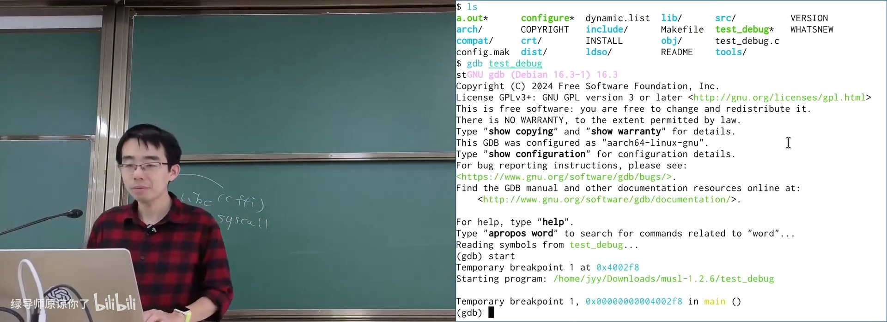
📷 从 GDB 看不到 libc 源码的调试现场
回到原视频 (00:08:20)
1. Debug Info：让二进制重新“长出”源代码
1.1 编译 musl-gcc 与调试信息
(参考时间: 00:09)
先要让程序带着调试信息编译。最简单的 C 程序可以写成：
int main(void) {
return 1;
}
普通编译只产生机器指令和数据；加上 -g 后，目标文件与可执行文件中会多出调试信息节。
在 musl 教学环境中，可以把 libc 本身也编译成带调试信息、便于阅读的版本：
CC=musl-gcc \
CFLAGS="-Og -ggdb -fno-omit-frame-pointer" \
./configure --prefix="$HOME/musl-debug"
make -j"$(nproc)"
make install
随后静态编译演示程序：
musl-gcc -Og -ggdb -static test-debug.c -o test-debug
gdb ./test-debug
-Og 更偏向调试体验，-ggdb 生成 GDB 友好的调试信息，-fno-omit-frame-pointer 让调用栈更容易恢复。
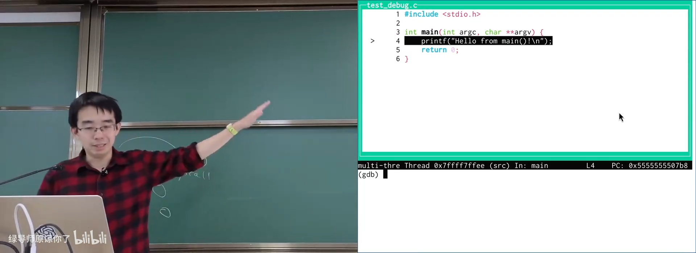
📷 首次加载程序时 GDB 还没有任何源代码
回到原视频 (00:09:00)
1.2 调试信息是二进制中的额外节
(参考时间: 00:10)
可以用 readelf -a 查看 ELF 文件。除了熟悉的 .text、.data、.bss，带调试信息的文件还会包含：
.debug_info：类型、变量、函数和编译单元等核心信息；.debug_abbrev：调试信息中使用的缩写表；.debug_line：机器地址与源代码行的对应；.debug_str：调试字符串表；.debug_ranges、.debug_rnglists：地址范围；.debug_frame：调用栈展开所需的信息；.debug_loc、.debug_loclists：变量位置表达式。
readelf -a ./test-debug | less
readelf -S ./test-debug
这些节使用 DWARF Debugging Standard。名字也埋着课程常提到的幻想梗：
- ELF 是精灵（Elf）；
- DWARF 是矮人（Dwarf）。
DWARF 不只是“地址到行号”的表格。它包含一个类似字节码的小型指令集，用来描述：
在某个 PC 范围内，某个变量的值在哪里，应该怎样计算出来。
变量可能在寄存器里、栈上、内存中的某个偏移；经过优化后，甚至可能只在某段指令内存在。DWARF 字节码负责把这些位置和计算规则描述出来。
flowchart TD
A["ELF 二进制"] --> B[".debug_info"]
A --> C[".debug_line"]
A --> D[".debug_frame"]
A --> E[".debug_str / ranges / loc"]
B --> F["类型、变量、函数、编译单元"]
C --> G["PC 地址 ↔ 源代码行"]
D --> H["栈帧展开"]
E --> I["名称和地址范围"]
F --> J["调试器重建程序状态"]
G --> J
H --> J
I --> J
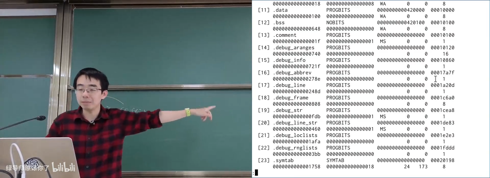
📷 readelf 中多出的 DWARF 调试节
回到原视频 (00:11:10)
1.3 没有 DWARF，符号表也能近似定位
(参考时间: 00:14)
即使没有 -g，ELF 通常仍保留 .symtab 符号表。可以用 nm 查看：
nm ./a.out | grep ' main'
它会告诉我们类似：
0000000000400218 T main
如果 PC 进入 main 的地址范围，调试器至少知道“当前正在执行 main”。但符号表通常不能精确告诉调试器“现在正在执行 main.c 的第几行”。
调试信息补足了更精细的映射：
flowchart LR
S[".symtab"] --> A["函数级定位"]
A --> B["main"]
D[".debug_line"] --> C["语句级定位"]
C --> D2["main.c:11"]
B --> E["近似 addr2line"]
D2 --> F["完整源码调试"]
addr2line 把地址解析为源码位置：
addr2line -e ./test-debug -f 0x400218
输出类似：
main
/path/test-debug.c:3
有了符号表和地址映射，理论上就足以实现一个简单调试器。更复杂的部分，例如多级调用栈、变量类型、位域和优化后变量恢复，需要完整 DWARF。
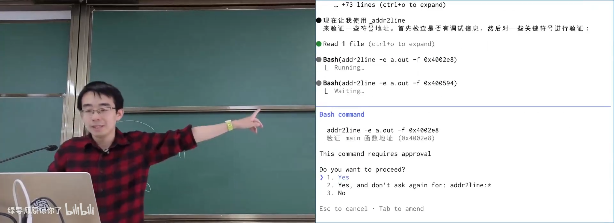
📷 nm 与 addr2line 从地址恢复函数和源代码行
回到原视频 (00:16:55)
1.4 DWARF 字节码为什么存在
(参考时间: 00:17)
C 程序中的变量并不总能简单地对应一个寄存器或固定栈偏移。考虑：
- 变量可能一会儿在寄存器，一会儿被写回内存；
- 结构体可能使用位域；
- 优化器可能重排、内联或删除变量；
- 编译器可能只为一段 PC 范围保留某个值。
因此 DWARF 需要一种可执行的描述语言。它能够读取寄存器、访问内存、做算术、判断范围，甚至分支。它本质上足够表达任意值恢复过程，所以是一个图灵完备的字节码系统。
调试器显示：
variable optimized out
往往就是编译器没有为该位置生成可恢复信息，或者优化后确实不再存在这个变量。
DWARF 也用于 C++ 异常的 stack unwinding：异常抛出时，需要沿着调用栈找到能够处理异常的帧，并在展开过程中恢复寄存器与栈状态。上一讲的 longjmp 和这里的栈展开在机制上有相通之处。
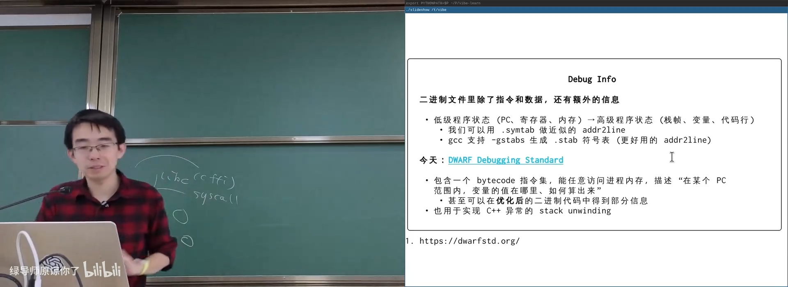
📷 DWARF 字节码描述变量在何处、如何计算
回到原视频 (00:17:40)
1.5 Source Map：浏览器里的调试信息
(参考时间: 00:20)
并非所有语言都像 C 一样依赖外部源文件。TypeScript 会被转译成 JavaScript，新版本 JavaScript 又可能被转译成旧浏览器兼容的代码。浏览器沙盒中没有开发者的项目目录，因此调试信息可以直接携带源码。
前端构建常生成 .map 文件：
{
"version": 3,
"file": "bundle.js",
"sources": ["src/index.js"],
"names": ["map", "callbackFn"],
"mappings": "AAAA, ...",
"sourcesContent": ["const x = 1; ..."]
}
sourcesContent 可以把原始源码直接嵌进 Source Map。
课堂上以 Claude Code 的 cli.js.map 泄漏为例。压缩后的 JavaScript 本来难以阅读，但 Source Map 中保存了源码，使人们很快得到接近原始项目的代码结构。讲师评价其中不少设计比较普通，但也看到 React 实现的终端 UI、异步 token 处理等有趣细节。
更值得注意的是供应链安全：
- 从网络下载并构建未知项目会执行脚本；
- 依赖包可能被投毒；
- 构建环境中的 token、密钥和环境变量可能泄漏；
- 发布前应使用自动检查扫描源代码和构建产物；
- 处理来路不明的项目最好放在干净沙盒里。
flowchart LR
TS["TypeScript"] --> JS1["JavaScript"]
JS1 --> JS2["兼容旧浏览器的 JavaScript"]
JS2 --> MAP["Source Map"]
MAP --> SRC["浏览器中的源码位置"]
REPO["未知开源仓库"] --> CI["本地构建 / 安装"]
CI --> RISK["依赖投毒、脚本执行、密钥泄漏"]
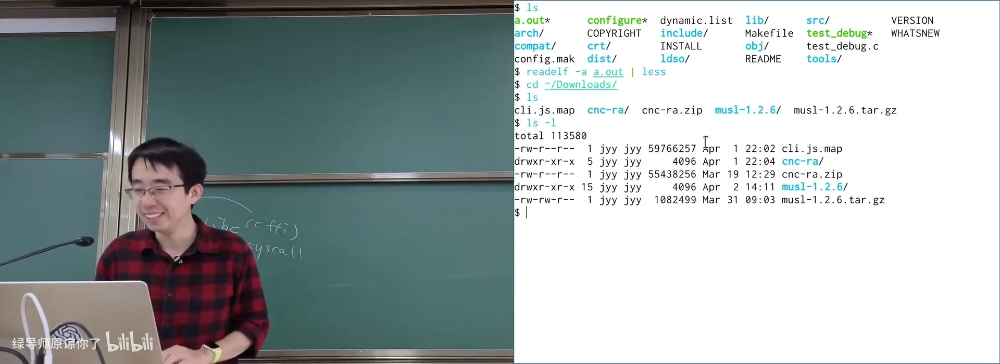
📷 Source Map 将压缩代码映射回原始源码
回到原视频 (00:23:39)
1.6 Debug Info 能做什么
(参考时间: 00:27)
调试信息的价值可以概括为：把机器状态重新解释为程序意义。
典型能力包括：
addr2line：地址映射到源码行；- backtrace：恢复完整函数调用栈；
- profiler：周期性采样 PC，恢复调用栈并生成火焰图；
- crash dump：保存崩溃时刻的进程快照，事后调试；
- AddressSanitizer：在诊断报告中加入源码位置和对象信息。
以 bt 为例，调试器可以一次恢复从 main 到当前函数的整个调用链：
#0 second ()
#1 first ()
#2 main ()
flowchart TD
A["main 栈帧"] --> B["first 栈帧"]
B --> C["second 栈帧"]
C --> D["当前 PC 与寄存器"]
D --> E["DWARF 展开规则"]
E --> F["恢复返回地址与 save 寄存器"]
F --> G["backtrace / profiler / crash dump"]
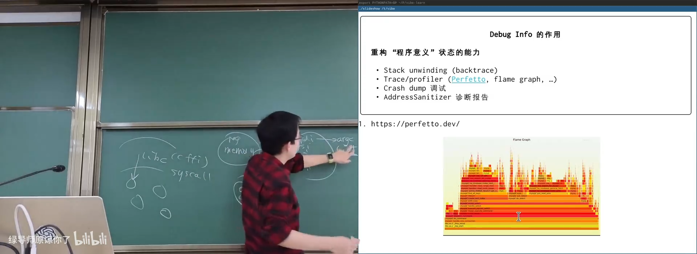
📷 GDB backtrace 恢复多层调用栈
回到原视频 (00:30:00)
1.7 火焰图：采样得到的调用栈时间轴
(参考时间: 00:31)
如果每隔很短时间暂停程序并记录调用栈，就能得到一张火焰图：
- 横轴表示时间或采样总体；
- 每一层表示一个调用栈帧；
- 函数进入时向上叠加；
- 函数返回时对应层结束；
- 越宽的框代表该调用路径占用的采样越多。
strace 记录系统调用，适合观察内核边界；火焰图采样用户态调用栈，更适合寻找 CPU 性能瓶颈。
flowchart TD
A["周期性中断程序"] --> B["读取 PC 与寄存器"]
B --> C["用 DWARF 恢复调用栈"]
C --> D["记录一个栈样本"]
D --> E{"继续采样？"}
E -- "是" --> A
E -- "否" --> F["聚合调用栈"]
F --> G["火焰图 / 性能分析"]
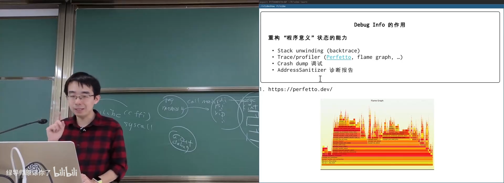
📷 火焰图展示调用栈随时间的变化
回到原视频 (00:31:55)
1.8 Sanitizer：把隐蔽未定义行为变成诊断报告
(参考时间: 00:34)
考虑一个典型的 use-after-free：
int *p = malloc(sizeof(*p));
*p = 1;
free(p);
*p = 2; /* undefined behavior */
这段代码可能不崩溃。释放后，虚拟地址空间中的页可能仍然映射；从机器角度看，指针的值也没改变。问题不会凭空消失，只是暂时没有被观察到。
使用 AddressSanitizer：
cc -fsanitize=address -g -O1 bug.c -o bug
./bug
诊断报告会指出：
heap-use-after-free
并利用调试信息展示源码位置、分配栈和释放栈。
flowchart LR
A["malloc 返回地址"] --> B["程序使用对象"]
B --> C["free 标记对象已释放"]
C --> D["指针值仍然存在"]
D --> E{"再次访问？"}
E -- "普通运行" --> F["可能静默成功"]
E -- "ASan 运行" --> G["heap-use-after-free 诊断"]
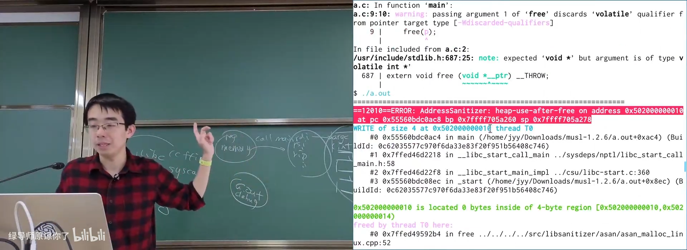
📷 AddressSanitizer 报告 use-after-free 与源码位置
回到原视频 (00:34:44)
2. 调试 crt1.o：从第一条汇编指令到 main
2.1 最小程序其实经过了完整 Runtime
(参考时间: 00:35)
把 dummy.c 编译并静态链接后：
musl-gcc -Og -ggdb -static dummy.c -o dummy
strace ./dummy
strace 会显示，程序在 execve 后只执行少量初始化，然后直接调用 exit 系统调用。相比带大量初始化逻辑的 glibc，musl 的启动路径更短，适合观察。
进入 GDB：
gdb ./dummy
初始 PC 位于 _start。_start 是汇编代码，进入它所调用的 C 函数 _start_c 后，就能看到更完整的调试信息。
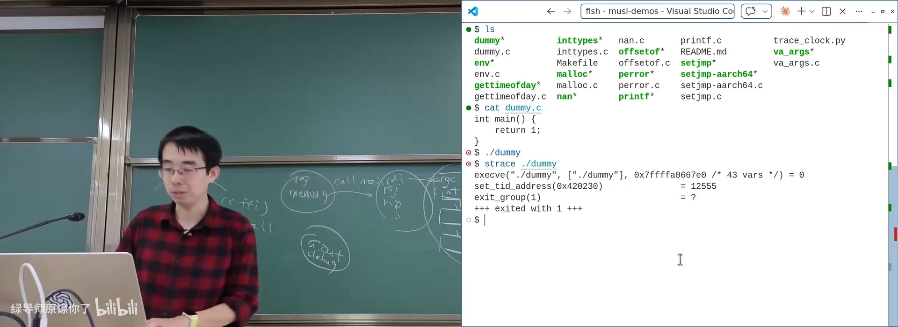
📷 GDB 从 `_start` 开始单步执行最小程序
回到原视频 (00:35:46)
2.2 用代码反向还原初始进程栈
(参考时间: 00:36)
_start_c 接收一个 long *p。这个指针就是内核交给用户态程序的初始栈位置。
按照 System V ABI，初始栈布局可以表示为：
p[0] = argc
p[1] = argv[0]
p[2] = argv[1]
...
p[1+argc] = NULL
p[2+argc] = envp[0]
p[3+argc] = envp[1]
...
= NULL
= auxiliary vector entries
因此：
long argc = p[0];
char **argv = (char **)&p[1];
char **envp = argv + argc + 1;
在 GDB 中可以打印 argv[0]、envp[0] 和 envp[1]，确认它们分别对应可执行文件名和环境变量。
flowchart TD
A["内核设置 initial process stack"] --> B["argc"]
B --> C["argv[0] … argv[argc-1]"]
C --> D["argv 终止 NULL"]
D --> E["envp[0] …"]
E --> F["envp 终止 NULL"]
F --> G["auxv: AT_RANDOM、AT_SYSINFO_EHDR 等"]
A --> H["_start / _start_c 读取栈指针"]
H --> I["计算 argc、argv、envp"]
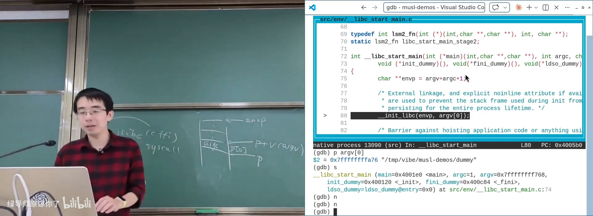
📷 在 GDB 中检查初始进程栈的 argc、argv 与 envp
回到原视频 (00:37:28)
2.3 __init_libc 与 __libc_start_main
(参考时间: 00:38)
继续单步会进入 __init_libc。这里完成：
- 把
envp赋给全局变量environ； - 跳过所有环境变量；
- 处理后续 auxiliary vector；
- 保存 TLS、随机数种子、vDSO 地址等运行时信息。
环境变量每一项都是一个指向 NUL 结尾字符串的指针：
extern char **environ;
for (char **e = envp; *e; ++e) {
/* 处理 KEY=VALUE */
}
处理完初始化后，控制流进入 __libc_start_main，再由 stage2 调用真正的 main(argc, argv, envp)。
flowchart TD
A["ELF entry"] --> B["_start"]
B --> C["_start_c(long *p)"]
C --> D["计算 argc / argv / envp"]
D --> E["__libc_start_main"]
E --> F["__init_libc"]
F --> G["environ = envp"]
G --> H["处理 auxv"]
H --> I["stage2"]
I --> J["main(argc, argv, envp)"]
J --> K["exit"]
K --> L["exit system call"]
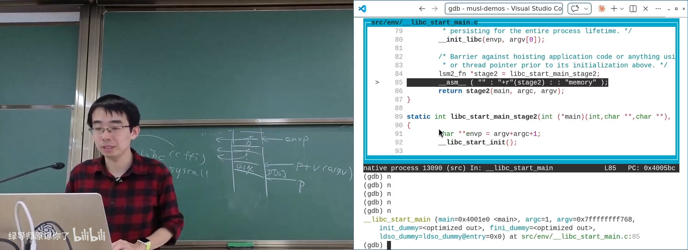
📷 musl 从 `__init_libc` 进入 `__libc_start_main`
回到原视频 (00:39:28)
3. 调试 printf、变参数与 FILE
3.1 给 printf 打断点
(参考时间: 00:41)
在 VS Code 或 GDB 中给 musl 的 printf 打上断点。进入后可以看到：
int printf(const char *fmt, ...) {
return vfprintf(stdout, fmt, ...);
}
实际实现通过 va_list 把可变参数传给 vfprintf。
此时展开 stdout，能看到 FILE 的内部状态：
fd = 1；buf指向用户空间缓冲区；buf_size = 1024；- 当前读写位置和缓冲位置；
- 错误、EOF 和状态标志。
这直接印证上一讲的结论：标准 I/O 是文件描述符和用户空间缓冲的封装。
flowchart LR
A["printf(fmt, ...)"] --> B["构造 va_list"]
B --> C["vfprintf(stdout, fmt, ap)"]
C --> D["vfprintf 内部解析循环"]
D --> E["格式化到 stdout buffer"]
E --> F{"缓冲区满或主动 flush？"}
F -- "否" --> G["留在用户空间"]
F -- "是" --> H["write / writev 系统调用"]
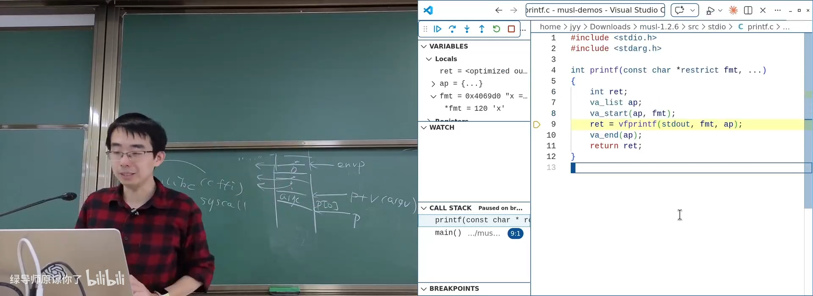
📷 GDB 展开 `stdout` 的 `FILE` 结构
回到原视频 (00:43:00)
3.2 变参数不是魔法
(参考时间: 00:44)
在旧的 32 位 x86 cdecl 调用约定中，参数依次压栈。很多人会用下面的方式访问变参数：
void foo(int n, ...) {
intptr_t *vargs = (intptr_t *)&n;
/* vargs[0] = n */
/* vargs[1] = 第一个可变参数 */
/* vargs[2] = 第二个可变参数 */
}
这个 hack 在现代 x86-64、AArch64、RISC-V 上不再可行，因为前几个参数通过寄存器传递。函数入口时，它们并不天然在内存中形成连续数组。
编译器与 libc 必须协作。以 AArch64 为例，参数寄存器可能是 x0、x1、x2 等。进入可变参数函数后，编译器会生成一段序言，把寄存器参数保存到栈上的一个“寄存器保存区”，使 va_list 能按统一方式遍历。
flowchart TD
A["调用者把参数放入寄存器"] --> B["进入可变参数函数"]
B --> C["函数序言保存部分寄存器到栈"]
C --> D["构造 va_list 元数据"]
D --> E["va_start"]
E --> F["va_arg 依次读取寄存器区或栈参数"]
F --> G{"还有参数？"}
G -- "是" --> F
G -- "否" --> H["va_end"]
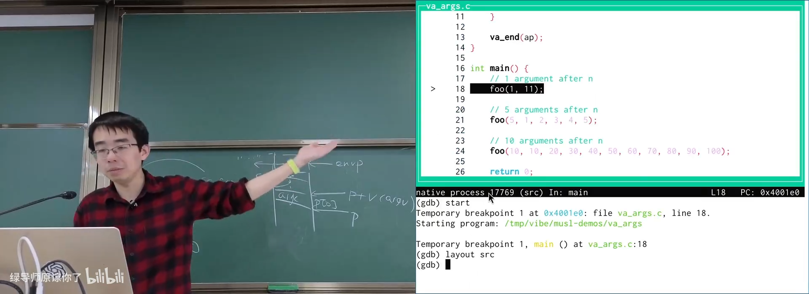
📷 AArch64 下寄存器参数被保存到栈
回到原视频 (00:46:00)
3.3 va_list 与 printf 解析器
从汇编回到 C 语义，可以写成：
#include <stdarg.h>
void foo(int n, ...) {
va_list ap;
va_start(ap, n);
for (int i = 0; i < n; ++i) {
int value = va_arg(ap, int);
/* use value */
}
va_end(ap);
}
vfprintf 的核心工作包括：
- 扫描格式字符串；
- 普通字符直接输出；
- 遇到
%d、%s、%x等转换规范时解析标志、宽度、精度； - 用
va_arg取得参数； - 格式化到
FILE缓冲； - 必要时通过
write或writev进入内核。
flowchart LR
A["format string"] --> B{"当前字符"}
B -- "普通字符" --> C["复制/输出"]
B -- "% 转换" --> D["解析 flags / width / precision"]
D --> E["va_arg 取参数"]
E --> F["格式化"]
C --> G["FILE buffer"]
F --> G
G --> H{"flush？"}
H -- "是" --> I["write / writev"]
H -- "否" --> J["继续解析"]
J --> B
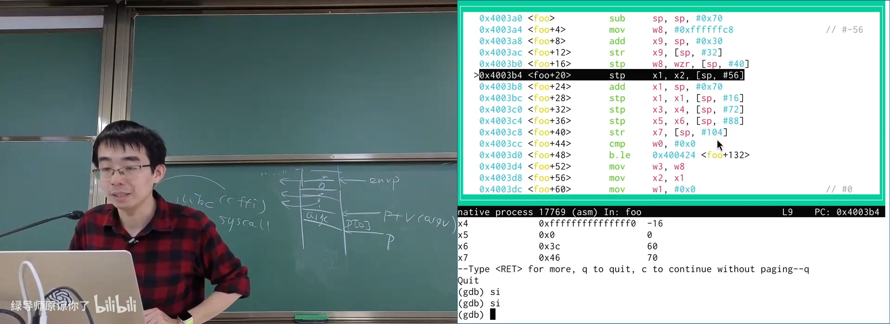
📷 单步进入 `vfprintf` 的格式化循环
回到原视频 (00:47:17)
4. 调试 setjmp / longjmp：给寄存器刷漆
4.1 实验设计
(参考时间: 00:48)
为了观察 setjmp / longjmp 到底保存什么，讲师让 AI 写了一段寄存器实验：
- 在
setjmp前，把x0到x28全部写成一组“红色”值； - 调用
setjmp； - 再把所有可用寄存器写成另一组“蓝色”值；
- 调用
longjmp； - 观察哪些寄存器恢复成红色，哪些仍保持蓝色。
这像给寄存器“刷漆”，颜色变化直接暴露保存与恢复行为。
flowchart TD
A["所有可用寄存器刷为红色"] --> B["setjmp(buf)"]
B --> C["部分寄存器被保存到 buf"]
C --> D["所有可用寄存器刷为蓝色"]
D --> E["longjmp(buf, value)"]
E --> F["从 buf 恢复部分寄存器"]
F --> G["观察哪些变量恢复为红色"]
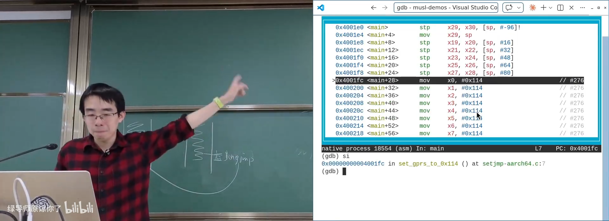
📷 进入实验时所有可用寄存器被刷成同一值
回到原视频 (00:50:25)
4.2 setjmp 保存了什么
(参考时间: 00:51)
实验里不能随意覆盖栈指针、特殊控制寄存器和运行时必须保持的寄存器。可以修改的通用寄存器中，x0 到 x18 很快就被函数调用和编译器使用，原来的“红色”值迅速消失。
setjmp 的汇编代码把 x19 到 x28 成对保存到 buf，同时保存：
- 返回地址；
- 栈指针；
- 后续恢复所需的上下文。
可以看到类似：
stp x19, x20, [x0, #...]
stp x21, x22, [x0, #...]
stp x23, x24, [x0, #...]
...
mov w0, #0
ret
stp 是 AArch64 的一次保存两个寄存器的 store pair 指令。
flowchart TD
A["setjmp(buf)"] --> B["保存返回地址 / SP"]
B --> C["保存 x19-x28"]
C --> D["保存调用约定要求的上下文"]
D --> E["返回 0"]
E --> F["程序继续执行"]
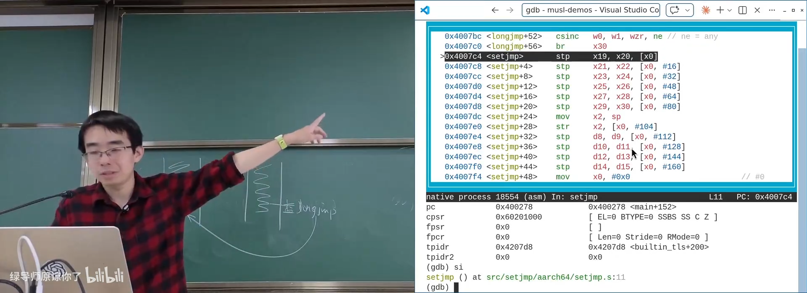
📷 `setjmp` 将 `x19` 到 `x28` 等寄存器保存进 `buf`
回到原视频 (00:51:24)
4.3 longjmp 恢复了什么
(参考时间: 00:52)
在 longjmp 前，寄存器再次被刷成新值。执行 longjmp 后，可以观察到：
x0到x18仍然是新值，说明它们没有被longjmp恢复；x19到x28被恢复成setjmp保存的旧值；- 返回地址与栈上下文恢复，控制流回到
setjmp的位置。
longjmp 的汇编代码主要执行成对 load：
ldp x19, x20, [x0, #...]
ldp x21, x22, [x0, #...]
...
ret
因此，这个实验实际上逆向了 AArch64 调用约定的一部分。
flowchart LR
A["setjmp 保存 x19-x28"] --> B["中间调用任意多层函数"]
B --> C["模型：寄存器和栈帧发生变化"]
C --> D["longjmp"]
D --> E["恢复 x19-x28、SP 和返回地址"]
E --> F["跳回 setjmp 的返回点"]
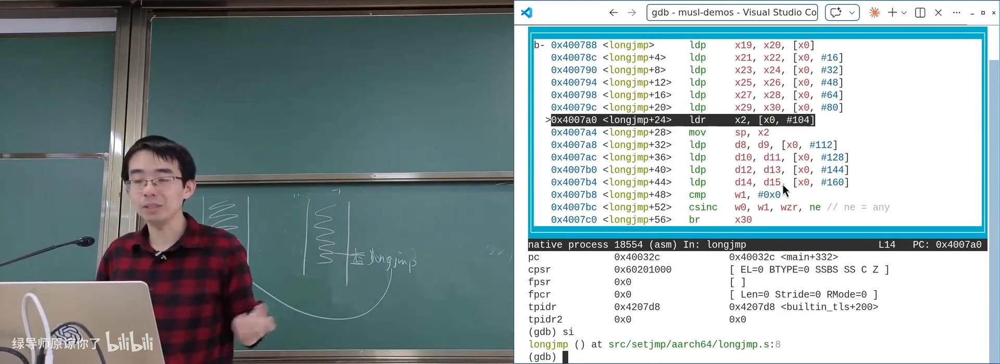
📷 `longjmp` 后 `x19` 到 `x28` 被恢复
回到原视频 (00:52:47)
4.4 Caller-saved 与 callee-saved
(参考时间: 00:54)
为什么 x0 到 x18 不需要保存？
因为这些寄存器属于调用约定中的 caller-saved，或者更直观地叫 call-clobbered：
- 调用函数后，被调用者可以随意改写；
- 调用者不能在调用前把一个需要继续使用的值留在这些寄存器里，并期待调用后还保持；
- 如果调用者需要保留，必须自己先保存。
x19 到 x28 则是 callee-saved：
- 被调用函数如果想使用，必须先保存原值；
- 返回前必须恢复；
- 因此
setjmp保存它们，longjmp再恢复它们。
这正是函数调用约定能够在汇编层工作的基础。
flowchart TD
A["函数调用"] --> B{"寄存器类别"}
B -- "caller-saved / call-clobbered" --> C["被调用者可以随意改写"]
C --> D["调用者自行保存需要的值"]
B -- "callee-saved" --> E["被调用者若要使用"]
E --> F["保存旧值"]
F --> G["使用寄存器"]
G --> H["返回前恢复旧值"]
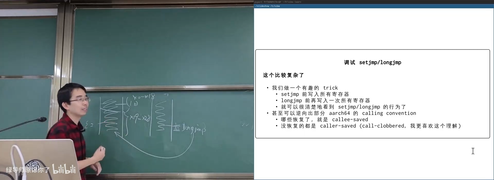
📷 从寄存器恢复行为反推 AArch64 调用约定
回到原视频 (00:55:45)
5. 调试 gettimeofday：不进入内核的系统调用
5.1 进程自身没有时间概念
(参考时间: 00:56)
一个程序可以这样测量经过的时间：
#include <sys/time.h>
#include <unistd.h>
struct timeval t1, t2;
gettimeofday(&t1, NULL);
usleep(200000);
gettimeofday(&t2, NULL);
long elapsed_us =
(t2.tv_sec - t1.tv_sec) * 1000000L +
(t2.tv_usec - t1.tv_usec);
进程状态只有寄存器和内存，无法仅靠自己感知物理时间。因此从原理上说，读取时间应通过系统调用。
strace 运行结果却有意外：
strace ./gettimeofday-demo
可以看到 nanosleep 或 clock_nanosleep，却看不到 gettimeofday。
既然程序打印出的时间正确，它一定通过其他方式读取了时钟。
flowchart LR
A["进程"] --> B["寄存器和内存"]
B --> C{"能直接感知物理时间吗？"}
C -- "不能" --> D["需要时钟来源"]
D --> E["传统方案：系统调用"]
D --> F["优化方案：vDSO"]
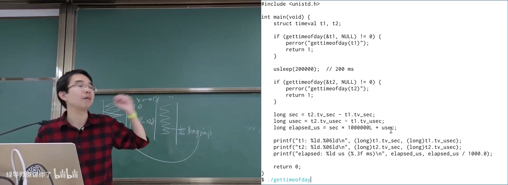
📷 `strace` 只看到睡眠系统调用，没有看到 `gettimeofday`
回到原视频 (00:57:24)
5.2 usleep 最终调用 clock_nanosleep
(参考时间: 01:00)
进入 musl 的 usleep 实现，可以看到它把微秒转换为 timespec，然后调用 clock_nanosleep：
int usleep(useconds_t usec) {
struct timespec ts = {
.tv_sec = usec / 1000000,
.tv_nsec = (usec % 1000000) * 1000
};
return clock_nanosleep(CLOCK_REALTIME, 0, &ts, 0);
}
底层系统调用使用内联汇编和 register 变量，把参数放入 ABI 规定的寄存器：
register long x8 __asm__("x8") = __NR_clock_nanosleep;
register long x0 __asm__("x0") = CLOCK_REALTIME;
register long x1 __asm__("x1") = 0;
register long x2 __asm__("x2") = (long)&ts;
register long x3 __asm__("x3") = 0;
__asm__ volatile("svc 0"
: "+r"(x0)
: "r"(x1), "r"(x2), "r"(x3), "r"(x8)
: "memory");
这段代码很适合观察：libc 并没有消灭系统调用，而是把它们藏在清晰的 C 接口后面。
flowchart TD
A["usleep(200000)"] --> B["构造 timespec"]
B --> C["clock_nanosleep"]
C --> D["参数写入 x0-x3 和系统调用号 x8"]
D --> E["svc 0 进入内核"]
E --> F["内核挂起线程"]
F --> G["到期后返回用户态"]
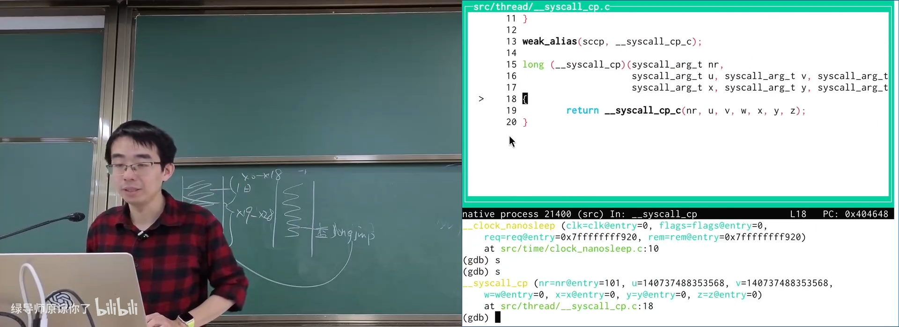
📷 musl `usleep` 最终进入 `clock_nanosleep`
回到原视频 (01:00:35)
5.3 vDSO 与 vvar
(参考时间: 01:01)
gettimeofday 的路径经过条件编译分支，进入 musl 的 __vdsosym：
#ifdef VDSO_CGT_SYM
if (!vdso_func) {
vdso_func = __vdsosym(VDSO_CGT_VER, VDSO_CGT_SYM);
}
#endif
进程地址空间中有两块特殊区域：
- vDSO：Virtual Dynamic Shared Object，内核提供的一小段用户态代码；
- vvar：内核维护的只读数据页，包含当前时间、CPU 信息等动态数据。
时钟中断会更新 vvar 中的计数器。用户程序读取 vvar，再调用 vDSO 中的代码完成换算，因此不需要陷入内核。
flowchart LR
A["内核"] --> B["vvar: ticks / time data"]
A --> C["vDSO: clock_gettime code"]
B --> D["用户进程"]
C --> D
D --> E["读取时钟数据"]
E --> F["执行用户态计算"]
F --> G["返回 gettimeofday 结果"]
G --> H["没有 syscall 指令"]
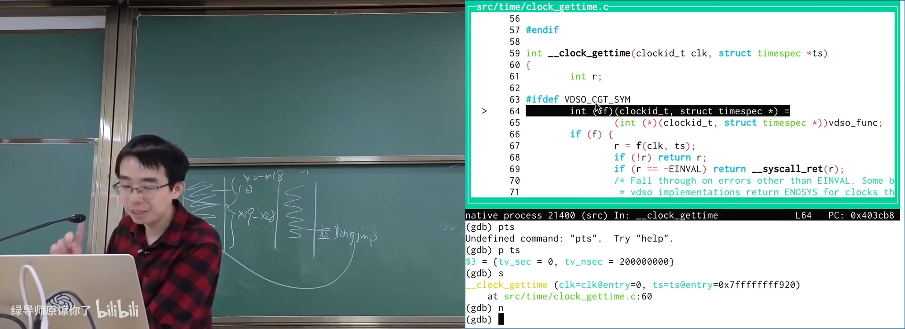
📷 musl 通过 vDSO 读取时钟
回到原视频 (01:01:55)
5.4 auxv 告诉 libc 去哪里找 vDSO
(参考时间: 01:03)
libc 怎么知道 vDSO 被映射在哪里？
答案仍在初始进程栈后面的 auxiliary vector（auxv）。内核在启动进程时放置 AT_SYSINFO_EHDR 等条目，musl 遍历 auxv 查找 vDSO 的 ELF program headers。
找到 vDSO 后，libc 像一个小型动态加载器一样：
- 解析 ELF header；
- 遍历 program headers；
- 找到 dynamic segment；
- 遍历动态符号表；
- 查找
__kernel_clock_gettime； - 取得函数地址并缓存。
flowchart TD
A["initial process stack"] --> B["argc / argv / envp"]
B --> C["auxv"]
C --> D["AT_SYSINFO_EHDR"]
D --> E["vDSO ELF base"]
E --> F["解析 program headers"]
F --> G["定位 dynamic / dynsym"]
G --> H["查找 __kernel_clock_gettime"]
H --> I["缓存函数地址"]
I --> J["用户态调用"]
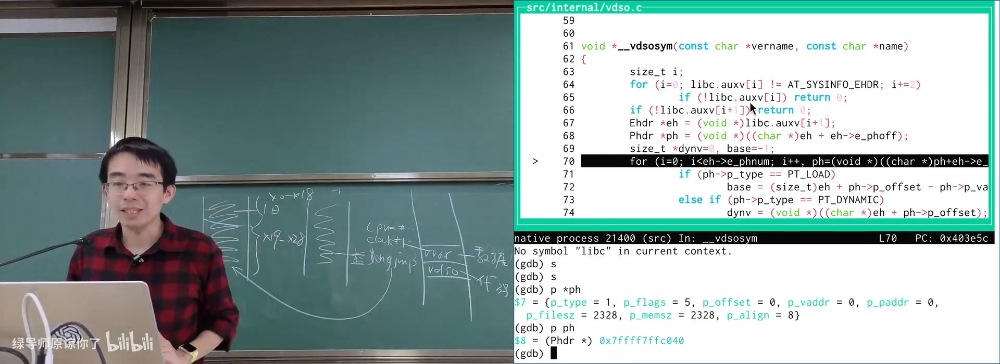
📷 auxv 中的 `AT_SYSINFO_EHDR` 定位 vDSO
回到原视频 (01:04:30)
5.5 时钟序列计数器与单步调试陷阱
(参考时间: 01:05)
解析到函数地址后，GDB 可以跳进 vDSO 的汇编代码。这里没有 svc 系统调用，却能从 vvar 得到正确时间。
让 AI 生成 GDB script，记录 __kernel_clock_gettime 的完整指令序列，会发现一个循环：
读取 sequence counter
读取时钟数据
再次读取 sequence counter
如果两次计数器相同，数据有效
否则重试
do {
seq1 = read_seqcount();
time = read_time_data();
seq2 = read_seqcount();
} while (seq1 != seq2);
这是一种无锁的一致性检查。若读取过程中发生时钟更新，序列号会改变，用户态代码就重新读取。
单步调试时，每条指令之间延迟很大，时钟中断很容易夹在两次读取之间，于是 GDB 看起来陷入“死循环”。这并不表示 vDSO 代码错误，而是调试器的单步速度破坏了原本依赖短暂时间窗口的假设。
flowchart TD
A["读取 tick 版本 seq1"] --> B["读取时钟数据"]
B --> C["读取 tick 版本 seq2"]
C --> D{"seq1 == seq2？"}
D -- "是" --> E["数据一致，计算时间"]
D -- "否" --> A
E --> F["返回用户态调用者"]
S["GDB 单步"] --> T["指令间延迟变大"]
T --> U["时钟更新频繁插入"]
U --> A
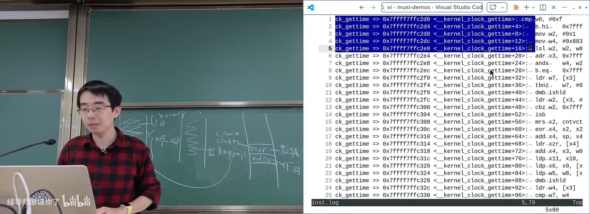
📷 vDSO 时钟读取的序列计数器循环
回到原视频 (01:08:05)
5.6 进程没有时间，但可以获得时间
(参考时间: 01:09)
gettimeofday 的例子给出一个重要结论：
系统调用语义不一定等于每次都必须执行机器级系统调用指令。
内核可以把一段安全、受控的实现映射进进程地址空间，由用户态直接执行。它仍然属于“操作系统提供的服务”，只是不经过传统的陷阱路径。
这也解释了若干现象：
- 游戏修改器的“变速齿轮”可以拦截时间相关调用；
- 性能优化会寻找可以避免内核切换的路径；
- vDSO 允许内核在保留抽象的同时缩短高频操作的路径。
flowchart TD
A["应用请求时间"] --> B{"是否有可用 vDSO？"}
B -- "否" --> C["syscall / svc 进入内核"]
C --> D["内核读取时钟"]
D --> E["返回用户态"]
B -- "是" --> F["调用 vDSO"]
F --> G["读取 vvar 数据"]
G --> H["用户态计算"]
E --> I["返回时间"]
H --> I
6. malloc / free：在系统调用上搭内存分配器
6.1 API 很简单，约束却非常严格
(参考时间: 01:11)
malloc / free 的接口非常直观：
void *ptr = malloc(n);
free(ptr);
它还要支持非常宽泛的需求：
- 可以申请很小的对象；
- 可以申请很大的对象；
- 标准甚至允许
malloc(0)返回一个之后可以传给free的唯一指针； calloc、realloc、aligned_alloc等接口可以在malloc之上实现。
但接口简单不代表语义简单。malloc 引入了一条跨函数、跨路径的协议：
- 每次成功分配最终必须恰好释放一次；
free后不能再使用该指针；- 不能在释放后再次释放同一个指针；
- 指针可能被复制，所有权容易被误用；
- 并发程序中，一个线程释放对象的同一时刻，另一个线程可能仍在使用。
int *p = malloc(sizeof(*p));
free(p);
*p = 42; /* use-after-free，未定义行为 */
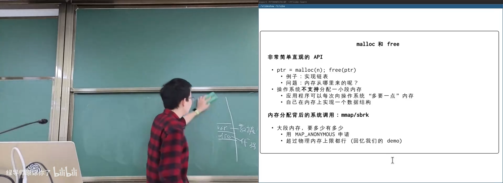
📷 use-after-free 在普通运行和 ASan 下的不同表现
回到原视频 (01:11:14)
6.2 操作系统不分配任意小字节
(参考时间: 01:12)
进程向操作系统申请内存的主要接口是：
brk/sbrk：移动数据段边界；mmap/munmap：映射或解除映射虚拟内存区域。
mmap 按页管理，常见页大小是 4 KiB。因此操作系统无法直接满足 malloc(1)、malloc(7) 这类任意大小的请求。
flowchart BT
A["应用程序"] --> B["malloc / free"]
B --> C["用户态分配器"]
C --> D["mmap / munmap"]
C --> E["brk / sbrk"]
D --> F["内核虚拟内存"]
E --> F
F --> G["物理页 / swap"]
libc 需要自己维护一组较大的内存区域，再把其中小块切给应用：
/* 思想示意，不是 libc 的真实实现。 */
void *malloc(size_t n) {
if (n_is_large(n)) {
return mmap_for_allocation(n);
}
return pop_small_block_from_pool(round_up(n));
}
flowchart TD
A["malloc(n)"] --> B{"n 是否足够大？"}
B -- "是" --> C["直接向内核 mmap"]
B -- "否" --> D["从已有内存池查找空闲块"]
D --> E{"找到足够大的块？"}
E -- "是" --> F["切分并返回"]
E -- "否" --> G["向内核申请新 region"]
G --> D
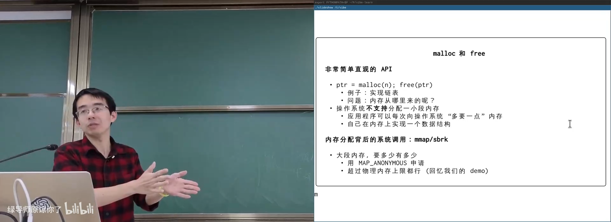
📷 小对象池与 `mmap` 大区域的分层
回到原视频 (01:12:50)
6.3 十亿美元错误与所有权
(参考时间: 01:14)
Tony Hoare 曾把空引用称为自己的 billion-dollar mistake。它与手工内存管理有相似的风险：程序员必须维持一个编译器无法直接证明的全局不变量。
对比不同 API：
open/write/close：语义相对局部，操作本身就是主要效果；malloc/free：要求在程序所有控制流路径上维持配对关系；free之后，普通 C 指针仍保存旧地址，语言层面并不自动让它失效。
人们为此发展出多种机制：
- Java、JavaScript 等语言的垃圾回收；
- C++ 的 RAII；
- Rust 的 ownership、borrowing 与生命周期；
- 智能指针、引用计数、区域分配；
- 静态分析与运行时 sanitizer。
flowchart TD
A["手工内存管理的所有权问题"] --> B["GC / managed runtime"]
A --> C["C++ RAII"]
A --> D["Rust ownership / borrowing"]
A --> E["智能指针 / 引用计数"]
A --> F["ASan / Valgrind / 静态分析"]
B --> G["减少显式 free"]
C --> H["作用域结束自动析构"]
D --> I["编译期跟踪所有权"]
E --> J["在类型中表达释放策略"]
F --> K["发现 use-after-free / leak"]
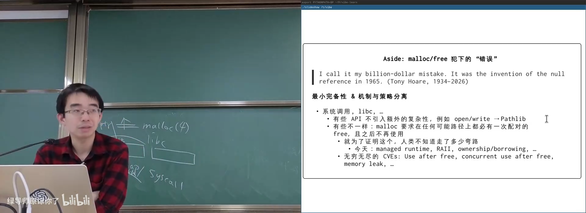
📷 Tony Hoare 的空引用反思与内存所有权
回到原视频 (01:15:00)
6.4 最直观的 malloc 作业方案
(参考时间: 01:19)
如果把 malloc 当数据结构题，最直接的设计是：
- 大对象直接使用
mmap； - 每个较小的
mmapregion 内部维护空闲区间集合； - 分配时寻找第一个足够大的区间；
- 从区间中切出所需大小；
- 释放时把区间重新插回集合；
- 尽可能合并相邻空闲区间。
这自然导向区间树或平衡二叉搜索树：
free_regions = { [addr, size], ... }
allocate(n):
find first region with size >= n
remove region
split into allocated block + remaining free region
free(ptr):
insert [ptr, size]
merge with adjacent free regions
算法课容易给出平衡树答案，但它并不是现代高性能分配器的主要实现方式。原因是性能不只由查找复杂度决定，还取决于真实工作负载、局部性、并发伸缩和常见对象大小。
flowchart TD
A["大对象"] --> B["mmap"]
A --> C["小块分配"]
C --> D["维护空闲区间集合"]
D --> E["first fit"]
E --> F["切分 / 删除"]
F --> G["free 时插入 / 合并"]
G --> H["平衡树是教材上的自然答案"]
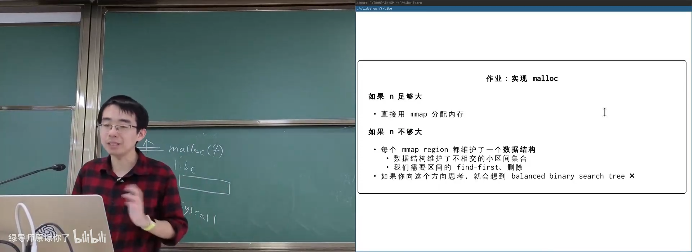
📷 在 GDB 与 `strace` 中观察分配器使用 `mmap`
回到原视频 (01:19:40)
7. 讲义延伸：真实 malloc 为什么不是一棵平衡树
编者说明：以下内容来自官方讲义，但视频在课堂时间结束前没有完整展开。为保持课程材料的完整性和术语一致，本节单独标为讲义延伸，不与课堂原话混在一起。
7.1 1995 年的综述：先理解真实工作负载
官方讲义推荐 Paul Wilson 等人的 1995 年动态内存管理综述：
其中已经指出，讨论分配器算法前，必须先理解真实程序行为。隔离空闲链表（segregated free lists）等思想早在 1964 年就出现了。多年后的新论文仍然在围绕真实 workload 调整性能和策略。
flowchart LR
A["真实程序行为"] --> B["对象大小分布"]
A --> C["生命周期分布"]
A --> D["并发访问模式"]
B --> E["分配器 design space"]
C --> E
D --> E
E --> F["策略与数据结构选择"]
7.2 观察：小对象多，大对象读写频繁
讲义给出一组经验观察：
- 大对象通常被写入和读取很多次，后续访问量应远大于对象大小；
- 若申请 16 MiB，只扫描一次就释放，往往说明程序存在 performance bug；
- 小对象创建频繁，可能生命周期很短；
- 中、大对象和容器往往存活更久；
- 所有处理器都会发生分配和回收，因此小对象路径的 scalability 非常关键。
如果把所有小对象都放进一个带全局锁的区间树，多核扩展性会很差。
7.3 Fast path 与 slow path
讲义借用《思考，快与慢》的两套思维系统，把分配器拆为：
- Fast path：速度极快，覆盖大多数常见分配；
- Slow path：不追求极限速度，但处理复杂情况并回退到
mmap。
flowchart TD
A["malloc 请求"] --> B["Fast path"]
B --> C{"本地缓存命中？"}
C -- "是" --> D["O(1) 分配完成"]
C -- "否" --> E["Slow path"]
E --> F["从全局池补充"]
F --> G{"池中内存不足？"}
G -- "是" --> H["mmap 新 region"]
G -- "否" --> I["切分 / 组织 slab"]
H --> I
I --> D
7.4 Segregated lists、slab 与 O(1) 回收
空间换简洁的典型方案是 slab 分配器：
- 每个 slab 中的对象大小固定；
- 每个线程为若干常见对象大小维护本地缓存；
- 小对象分配走线程本地 fast path；
- 不足时从全局 slab 补充；
- 释放通常只需把对象放回对应空闲链表，可达到 O(1)。
flowchart LR
A["Thread 0"] --> B["8B slab cache"]
A --> C["16B slab cache"]
A --> D["32B slab cache"]
E["Thread 1"] --> F["8B slab cache"]
E --> G["16B slab cache"]
B --> H["共享 page / region"]
C --> H
D --> H
F --> H
G --> H
延伸阅读：
7.5 理论与现实的边界
现实分配器通常不针对恶意 worst case 设计，而是针对正常程序行为优化。这给了拒绝服务攻击机会，也意味着：
脱离 workload 做优化没有意义。
性能问题需要先回答：
- 哪些对象大小最常见？
- 它们在什么处理器上分配？
- 生命周期多长？
- 多线程共享程度如何？
- 分配路径中的哪个环节成为瓶颈？
AI 时代的变化不是丢掉机制，而是可以更快地在更大的 design space 中搜索策略。机制仍然是舞台，策略可以从启发式升级为由模型驱动的决策。
flowchart TD
A["Mechanism：数据结构、原子操作、mmap、线程本地缓存"] --> B["Design space"]
C["Policy：大小分类、阈值、回收时机"] --> B
B --> D["AI / 实验搜索策略"]
D --> E["真实 workload 评测"]
E --> F{"性能是否改善？"}
F -- "是" --> G["保留策略"]
F -- "否" --> D
8. 总结：libc 的隐藏角落
这一讲从调试信息开始，逐层观察了 C Runtime 和 libc 中最容易被忽略的机制：
-g不只是“能看源码”，它把 DWARF 字节码、地址范围和变量位置写进二进制；.symtab可以做函数级近似定位，DWARF 才能恢复语句、类型和优化后的状态；- Source Map 把类似能力带入浏览器沙盒，同时也带来源码与供应链泄漏风险；
_start从 Initial Process Stack 恢复argc、argv、envp和 auxv；__init_libc负责environ、vDSO 和运行时状态；printf把va_list与文件描述符封装连接起来；setjmp/longjmp的“刷漆实验”揭示了 caller-saved 与 callee-saved 寄存器；gettimeofday通过 vDSO 与 vvar 在用户态读取时间，不执行syscall；malloc在页级系统调用之上管理小对象，并引入跨路径的配对释放约束；- 高性能分配器依赖真实 workload、fast/slow path、线程本地缓存和 slab。
libc 屏蔽了几乎所有指令集、ABI 和系统调用差异，但它的抽象层内部仍然充满机器相关代码。只有到调试器、汇编和真实 workload 这一层，才能看到这层“看不见的基础设施”究竟如何工作。
flowchart BT
A["机器指令 / ABI / 系统调用"] --> B["C Runtime"]
B --> C["libc 函数与运行时状态"]
C --> D["malloc / stdio / setjmp / 时间接口"]
D --> E["跨平台应用代码"]
E --> F["完整应用生态"]
G["DWARF / GDB / vDSO"] --> B
G --> C
G --> D
附：官方参考与延伸阅读
以下链接来自官方讲义第 10 讲及课堂内容：
- DWARF Debugging Standard
- musl debugging demos
- Perfetto
- Claude Code Source Map
- Claude Code reverse-engineering project
- Dynamic Storage Allocation: A Survey and Critical Review
- Mimalloc: Free List Sharding in Action
- Cross Container Attack
- Modern allocator research
官方课程资料：
版权与署名：本讲课程材料由蒋炎岩（jyy）编写。课程讲义与幻灯片采用 Creative Commons BY-NC 4.0 许可；本电子书保留课程出处、作者署名与许可说明。